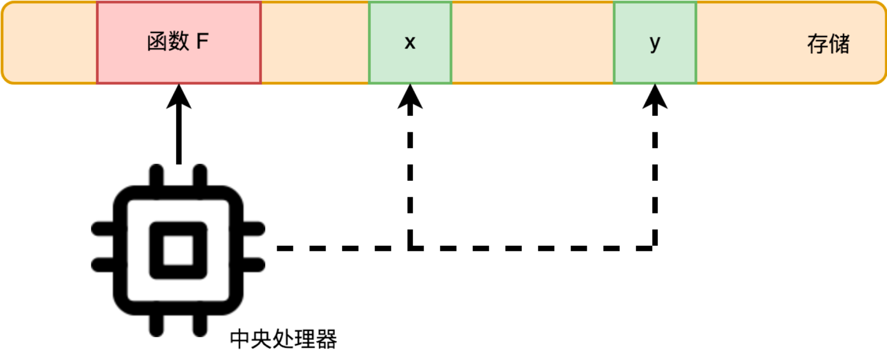

- 00 开篇词 怎样成长为优秀的软件架构师？.md.html
- 01 架构设计的宏观视角.md.html
- 02 大厦基石：无生有，有生万物.md.html
- 03 汇编：编程语言的诞生.md.html
- 04 编程语言的进化.md.html
- 05 思考题解读：如何实现可自我迭代的计算机？.md.html
- 06 操作系统进场.md.html
- 07 软件运行机制及内存管理.md.html
- 08 操作系统内核与编程接口.md.html
- 09 外存管理与文件系统.md.html
- 10 输入和输出设备：交互的演进.md.html
- 11 多任务：进程、线程与协程.md.html
- 12 进程内协同：同步、互斥与通讯.md.html
- 13 进程间的同步互斥、资源共享与通讯.md.html
- 14 IP 网络：连接世界的桥梁.md.html
- 15 可编程的互联网世界.md.html
- 16 安全管理：数字世界的守护.md.html
- 17 架构：需求分析 (上).md.html
- 18 架构：需求分析 (下) · 实战案例.md.html
- 19 基础平台篇：回顾与总结.md.html
- 20 桌面开发的宏观视角.md.html
- 21 图形界面程序的框架.md.html
- 22 桌面程序的架构建议.md.html
- 23 Web开发：浏览器、小程序与PWA.md.html
- 24 跨平台与 Web 开发的建议.md.html
- 25 桌面开发的未来.md.html
- 26 实战（一）：怎么设计一个“画图”程序？.md.html
- 27 实战（二）：怎么设计一个“画图”程序？.md.html
- 28 实战（三）：怎么设计一个“画图”程序？.md.html
- 29 实战（四）：怎么设计一个“画图”程序？.md.html
- 30 实战（五）：怎么设计一个“画图”程序？.md.html
- 31 辅助界面元素的架构设计.md.html
- 32 架构：系统的概要设计.md.html
- 33 桌面开发篇：回顾与总结.md.html
- 34 服务端开发的宏观视角.md.html
- 35 流量调度与负载均衡.md.html
- 36 业务状态与存储中间件.md.html
- 37 键值存储与数据库.md.html
- 38 文件系统与对象存储.md.html
- 39 存储与缓存.md.html
- 40 服务端的业务架构建议.md.html
- 41 实战（一）：“画图”程序后端实战.md.html
- 42 实战（二）：“画图”程序后端实战.md.html
- 43 实战（三）：“画图”程序后端实战.md.html
- 44 实战（四）：“画图”程序后端实战.md.html
- 45 架构：怎么做详细设计？.md.html
- 46 服务端开发篇：回顾与总结.md.html
- 47 服务治理的宏观视角.md.html
- 48 事务与工程：什么是工程师思维？.md.html
- 49 发布、升级与版本管理.md.html
- 50 日志、监控与报警.md.html
- 51 故障域与故障预案.md.html
- 52 故障排查与根因分析.md.html
- 53 过载保护与容量规划.md.html
- 54 业务的可支持性与持续运营.md.html
- 55 云计算、容器革命与服务端的未来.md.html
- 56 服务治理篇：回顾与总结.md.html
- 57 心性：架构师的修炼之道.md.html
- 58 如何判断架构设计的优劣？.md.html
- 59 少谈点框架，多谈点业务.md.html
- 60 架构分解：边界，不断重新审视边界.md.html
- 61 全局性功能的架构设计.md.html
- 62 重新认识开闭原则 (OCP).md.html
- 63 接口设计的准则.md.html
- 64 不断完善的架构范式.md.html
- 65 架构范式：文本处理.md.html
- 66 架构老化与重构.md.html
- 67 架构思维篇：回顾与总结.md.html
- 68 软件工程的宏观视角.md.html
- 69 团队的共识管理.md.html
- 70 怎么写设计文档？.md.html
- 71 如何阅读别人的代码？.md.html
- 72 发布单元与版本管理.md.html
- 73 软件质量管理：单元测试、持续构建与发布.md.html
- 74 开源、云服务与外包管理.md.html
- 75 软件版本迭代的规划.md.html
- 76 软件工程的未来.md.html
- 77 软件工程篇：回顾与总结.md.html
- 加餐 如何做HTTP服务的测试？.md.html
- 加餐 实战：“画图程序” 的整体架构.md.html
- 加餐 怎么保障发布的效率与质量？.md.html
- 热点观察 我看Facebook发币（上）：区块链、比特币与Libra币.md.html
- 热点观察 我看Facebook发币（下）：深入浅出理解 Libra 币.md.html
- 用户故事 站在更高的视角看架构.md.html
- 答疑解惑 想当架构师，我需要成为“全才”吗？.md.html
- 结束语 放下技术人的身段，用极限思维提升架构能力.md.html
- 课外阅读 从《孙子兵法》看底层的自然法则.md.html
- 捐赠
02 大厦基石：无生有，有生万物
你好，我是七牛云许式伟。
在上一讲中，我们把“构建一个应用程序”类比成“构建一座大厦”，并从宏观全局的视角剖析了应用程序这座大厦的构成。今天，我们将更加近距离地去解剖这座大厦的地基：冯·诺依曼体系结构。
解剖架构的关键点是什么？
在解剖之前，我想和你先谈谈“解剖学”：我们应该如何去分析架构设计中涉及的每一个零部件。换一句话说，当我们设计或分析一个零部件时，我们会关心哪些问题。
第一个问题，是需求。 这个零部件的作用是什么？它能被用来做哪些事情？（某种意义上来说更重要的是）它不会被用来做哪些事情？
你可能会说，呀，这个问题很简单，既然我设计了这个零部件，自然知道它是用来干嘛的。但实质上这里真正艰难的是“为什么”：为何这个零件被设计成用来干这些事情的，而不是多干一点事情，或者为什么不是少干某些事情？
第二个问题，是规格。 这个零部件接口是什么样的？它如何与其他零件连接在一起的？
规格是零部件的连接需求的抽象。符合规格的零部件可以有非常多种可能的实现方案，但是，一旦规格中某个条件不能满足了，它就无法正常完成与其他零件的连接，以达到预期的需求目标。
规格的约束条件会非常多样化，可能是外观（比如形状和颜色），可能是交互方式（比如用键盘、鼠标，或者语音和触摸屏），也可能是质量（比如硬度、耐热性等等）。
那么，冯·诺依曼体系结构的需求和规格又是什么样的呢？
为“解决一切的问题”而生
冯·诺依曼体系结构不但是应用程序这座大厦的地基，同时也是整个信息科技的地基。
当我们去审视整个信息科技时，仅把它形容为一座大厦显得如此不贴切，甚至你也不能用“一个城市”去形容它，事实上，它更像是一个无中生有的全新世界：在其中，有个体、有族群、有生态，还有喜怒哀乐。
冯·诺依曼体系结构的迷人之处在于，从需求来说，它想解决一切问题。解决一切可以用“计算”来解决的问题。
“计算”的边界在哪里？今天我们还没有人能够真正说得清。计算能不能解决“智能”的问题？通过计算能力，计算机是否终有一天可以获得和人类一样的智能？
今天人工智能热潮的兴起，证明对于这个问题我们很乐观：计算终将解决智能的问题。尽管我们不能确定什么时候能够达到，但是让人欣慰的是，我们一直在进步 —— 如果人类智能无法完成进一步的进化，那么我们就一直一直在前进，最终无限逼近甚至超越人类智能。
甚至有科幻小说家设想（例如在Google的“AlphaGo”大热后，霍炬和西乔创作的漫画“BetaCat”），计算机演进出超过人类的智能是生物进化的一个自然演进路径，它将取代人类成为新的食物链顶端，并最终基于其悠久的生命力，去完成人类有限生命无法实现的星际航行之路。
冯·诺依曼体系的规格
为了实现“解决一切可以用‘计算’来解决的问题”这个目标，冯·诺依曼引入了三类基础零部件：
- 中央处理器；
- 存储；
- 输入输出设备。
首先我们来看看存储。它负责存放计算涉及的相关数据，作为计算的输入参数和输出结果。
我们日常见到的存储设备非常的多样化。比如：中央处理器自己内置的寄存器、内存、传统机械硬盘、USB固态硬盘、光盘等等。
从中央处理器的角度，存储可简单分为两类：一类是内置支持的存储，通过常规的处理器指令可直接访问，比如寄存器、内存、计算机主板的ROM。一类是外置存储，它们属于输入输出设备。中央处理器本身并不能直接读写其中的数据。
冯·诺依曼体系中涉及的“存储”，指的是中央处理器内置支持的存储。
我们再来看看输入输出设备。它是计算机开放性的体现，大大拓展了计算机的能力。每个设备通过一个端口与中央处理器连接。通过这个端口地址，中央处理器可以和设备进行数据交换。数据交换涉及的数据格式由设备定义，中央处理器并不理解。
但这并不影响设备的接入。设备数据交换的发起方（设备使用方）通常理解并可以解释所接收的数据含义。为了方便使用，设备厂商或操作系统厂商通常会提供设备相关的驱动程序，把设备数据交换的细节隐藏起来，设备的使用方只需要调用相关的接口函数就可以操作设备。
最后我们来看看中央处理器。它负责程序（指令序列）的执行。指令序列在哪里？也存放在存储里面。计算机加电启动后，中央处理器从一个固定的存储地址开始执行。
中央处理器支持的指令大体如下（我们在第一篇文章中也曾提到过）：
- 计算类，也就是支持我们大家都熟知的各类数学运算，如加减乘除、sin/cos等等；
- I/O类，从存储读写数据，从输入输出设备读数据、写数据；
- 指令跳转类，在满足特定条件下跳转到新的当前程序执行位置、调用自定义的函数。
和“解决一切可以用‘计算’来解决的问题”这个伟大的目标相比，冯·诺依曼体系的三类零部件的规格设计显得如此精简。
为什么这么简洁的规格设计，居然可以解决这么复杂的需求？
需求是怎么被满足的？
我们来设想一下：假如今天让我们从零开始设计一个叫电脑的东西，我们的目标是“解决一切可以用‘计算’来解决的问题”。
对于这么含糊的需求，如果你是“电脑”这个产品的主架构师，你会如何应对？
让我们来分析一下。
一方面，需求的变化点在于，要解决的问题是五花八门包罗万象的。如何以某种稳定但可扩展的架构来支持这样的变化？而另一方面，需求的稳定之处在于，电脑的核心能力是固定的，怎么表达电脑的核心能力？
电脑的核心能力是“计算”。什么是计算？计算就是对一个数据（输入）进行变换，变为另一个数据（输出）。在数学中我们把它叫“函数”。如下：
y = F(x)
这里 x、y 是数据。它们可能只是一个简单的数值，也可能是文本、图片、视频，各种我们对现实问题进行参数化建模后的测量值，当然也可能是多个输入数据。但无论它的逻辑含义为何，物理上都可以以一段连续的字节内容来表达。用 Go 的语法表达就是：
func F(x []byte) (y []byte)
那么 x、y 物理上在哪里？思路推理到这里，“存储” 这个概念自然就产生了：存储，就是存放计算所要操作的数据的所在。
下面的问题是：一个具体的计算（也就是 F 函数）怎么表达？
这里的难点在于，F 对于电脑的架构师来说是未知的。那么，怎么设计一种系统架构让用户可以表达任意复杂的计算（函数）？
逻辑上来看，无论多复杂的自定义函数，都可以通过下面这些元素的组合来定义：
- 内置函数，比如整数或小数运算（加减乘除、sin/cos等）；
- 循环和条件分支；
- 子函数（也是自定义函数）。
这样一来，对于任意的一个具体的计算（自定义函数）来说，都可以用一组指令序列来表达。
那么函数 F 物理上在哪里？以指令序列形式存放在存储里面。所以，存储不只存放计算所要操作的数据，也存放“计算”本身。
只是，存储里面存放的“计算”只是数据，需要有人理解并执行这些数据背后的计算行为，才变成真正意义的“计算”。这个执行者，就是中央处理器（CPU）。它支持很多计算指令，包括执行内置函数、循环和条件分支、执行子函数等。
所以，有了中央处理器+存储，就可以支持任意复杂的“计算”了。

只是如果电脑只有“中央处理器+存储”，那它就如同一个人只有头脑而没有四肢五官，尽管很可能很聪明，但是这种聪明无法展现出来，因为它没法和现实世界发生交互。
交互，抽象来看就是输入和输出。对人来说，输入靠的是五官：眼睛看、耳朵听、鼻子闻、舌头尝，以及肌肤接触产生的触觉。输出靠语言（说话）和各种动作，如微笑、眨眼、皱眉、手势等等。
对于电脑来说，输入输出的需求就更多了，不只是四肢五官，而可能是千肢万官。
从输入需求来说，可能采集静态图像、声音、视频；也可能采集结构化数据，如GPS位置、脉搏、心电图、温度、湿度等；还可能是用户控制指令如键盘按键、鼠标、触摸屏动作等。
从输出需求来说，可能是向屏幕输出信息；也可能是播放声音；还可能是执行某项动作，如交通灯开关、汽车马达转动、打印机打印等。
但不管是什么样交互用途的器官（设备），我们要做的只是定义好统一的数据交换协议。这个数据交换机制，和网络上两台电脑通过互联网，需要通过某种数据交换协议进行通讯，需求上没有实质性的差别。
也就是说，除了纯正的“计算”能力外，中央处理器还要有“数据交换”能力（或者叫IO能力）。最终，电脑可以被看做由 “中央处理器+存储+一系列的输入输出设备” 构成。如下图：

尽管输入输出设备引入的最初灵感可能是来自于“交互”，但是当我们去审视输入输出设备到底是什么的时候，我们很自然发现，它能够做的不单单是交互。
比如常见的外置存储如机械硬盘、光盘等，它们也是输入输出设备，但并不是用于交互，而是显著提升了电脑处理的数据体量。
输入输出设备从根本上解决的问题是什么？
是电脑无限可能的扩展能力。
最重要的一点，输入输出设备和电脑是完全异构的。输入输出设备对电脑来说就只是实现了某项能力的黑盒子。
这个黑盒子内部如何？没有规定。它可以只是一个原始的数字化的元器件，也可以是另一台冯·诺依曼架构的电脑，还可以是完全不同架构的电脑，比如GPU电脑、量子计算机。
你可以发现，引入了输入输出设备的电脑，不再只能做狭义上的“计算”（也就是数学意义上的计算），如果我们把交互能力也看做一种计算能力的话，电脑理论上能够解决的“计算”问题变得无所不包。
架构思维上我们学习到什么？
架构的第一步是需求分析。从需求分析角度来说，关键要抓住需求的稳定点和变化点。需求的稳定点，往往是系统的核心价值点；而需求的变化点，则往往需要相应去做开放性设计。
对于“电脑”这个产品而言，需求的稳定点是电脑的“计算”能力。需求的变化点，一是用户“计算”需求的多样性，二是用户交互方式的多样性。
电脑的“计算”能力，最终体现为中央处理器的指令集，这是需求相对稳定的部分。
用户“计算”需求的多样性，最终是通过在存储中的指令序列实现。计算机加电启动后，中央处理器并不是按自己固有的“计算”过程进行，而是从一个固定的存储地址加载指令序列执行。
通常，这个固定的存储地址指向计算机主板的ROM上的一段启动程序（BIOS）。这段启动程序通常包含以下这些内容。
- 存储设备的驱动程序，用以识别常规的外置存储设备，比如硬盘、光驱、U盘。
- 基础外部设备的驱动程序，比如键盘、鼠标、显示器（显卡）。
- 设备和启动配置的基础管理能力。
- 在外置存储上执行程序的能力（中央处理器只支持在内存上执行程序，当然它也为在外置存储执行程序提供了一些支持，比如内存页缺失的中断处理）。
- 将执行权转移到外置存储（第一次安装操作系统的时候可能是光驱甚至是网络存储，平常通常是硬盘）上的操作系统启动程序。这样，操作系统就开始干活了。
这样一来，“计算”需求的多样性只需要通过调整计算机主板上的BIOS程序，乃至外置存储中的操作系统启动程序就可以实现，而不必去修改中央处理器本身。
用户交互方式的多样性，则通过定义外部设备与中央处理器的数据交换协议实现。
当我们把所有的变化点从电脑的最核心部件中央处理器剥离后，中央处理器的需求变得极其稳定，可独立作为产品进行其核心价值的演进。
结语
总结一下，今天，我们近距离地去解剖了整个信息世界地基：冯·诺依曼体系结构。
冯·诺依曼体系结构的不凡之处在于，它想“解决一切可以用‘计算’来解决的问题”。
为了实现这个目标，冯·诺依曼引入了三类基础零部件：中央处理器、存储、输入输出设备。所有计算机都可以看做由 “中央处理器+存储+一系列的输入输出设备” 构成。
为了方便理解，我在尝试用 Go 语言模拟来实现冯·诺依曼架构体系的电脑：
如果你对此感兴趣，欢迎 fork 并对其进行修改迭代。
如果你对今天的内容有什么思考与解读，欢迎给我留言，我们一起讨论。如果你觉得有所收获，也欢迎把文章分享给你的朋友。感谢你的收听，我们下期再见。
© 2019 - 2023 Liangliang Lee. Powered by gin and hexo-theme-book.